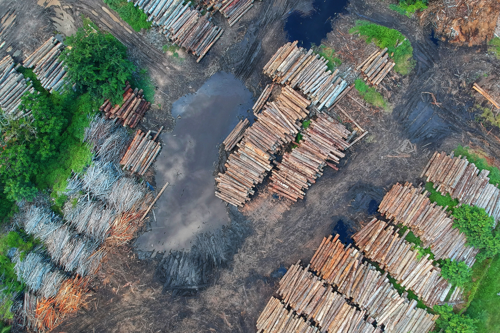

O Projeto
ODS-15: Vida terrestre- Proteger, recuperar, e promover o uso sutentável dos ecossistemas terrestres, gerir de forma sustentável as florestas, combater a desertificação, deter e reverter a degradação da terra e deter a perda de biodiversidade.
Como todos sabem, o Meio Ambiente é fundamental para manter a saúde do planeta e de todos os seres que
nele vivem; mas o mundo vem passando por diversos problemas que está acabando com o Meio Ambiente,
destruindo ecossistemas, poluindo o ar, a água, o solo, diminuinda a biodiversidade afetando bastante a
saúde do nosso planeta.E alguns desses graves problemas temos:
- Desmatamento;
- Queimadas;
- Poluição;
- Produção excessiva de lixo;
- Mudanças Climáticas(Aquecimento Global);
- Caça ilegal, tráfico de animais silvestres etc.
E se não for feito alguma coisa , a situação piorará ainda mais.Essa é a função do ODS-15, proteger ,
restaurar e conservar os ecossistemas terrestres dessas e outras ameaças à vida terrestre, com ações
vitais para reduzir os impactos no planeta.
